Odo ले तपाईंका डेलिभरी र राइडसेयर सिफ्ट, कामका लागि चलाएको किलोमिटर र कामका खर्चको हिसाब राख्छ। कर तिर्ने बेला तपाईंको एकाउन्टेन्ट वा myTax लाई चाहिने सबै कुरा दिन्छ। सेट गर्न करिब ५ मिनेट लाग्छ।
यो एक पटक मात्र गर्नुपर्छ। त्यसपछि Odo एक ट्यापमै पूरा स्क्रिनमा खुल्छ र सिग्नल नहुँदा पनि चल्छ।
iPhone (Safari)
स्क्रिनको तल Share बटन थिच्नुहोस् (माथि तीर भएको वर्ग)।
तल स्क्रोल गरेर Add to Home Screen थिच्नुहोस्।
माथि दायाँ कुनामा Add थिच्नुहोस्।
अबदेखि Odo होम स्क्रिनको नयाँ Od आइकनबाट खोल्नुहोस्।
Android (Chrome)
⋮ मेनु थिच्नुहोस् (माथि दायाँ तीन थोप्ला)।
Install app वा Add to Home screen थिच्नुहोस्।
Install वा Add थिच्नुहोस्।
होम स्क्रिनको नयाँ आइकनबाट Odo खोल्नुहोस्।
Android (Samsung Internet)
≡ मेनु थिच्नुहोस् (तल दायाँ तीन लाइन)।
Add page to, अनि Home screen थिच्नुहोस्।
Add थिच्नुहोस्।
ठेगाना पट्टीमा सानो install आइकन देख्नुहुन्छ? त्यो थिच्दा पनि यही हुन्छ।
💡 बटन भेटिएन? त्यसो भए Odo लाई बुकमार्क गर्नुहोस्। iPhone: Share → Add Bookmark। Chrome: ⋮ → तारा थिच्नुहोस्। Samsung Internet: ≡ → Add page to → Bookmarks।
3
निःशुल्क खाता बनाउनुहोस्
खाता नभए तपाईंका रेकर्ड यही फोनमा मात्र रहन्छन्। खाता भए Odo ले सबै ब्याकअप गर्छ, र नयाँ फोनमा साइन इन गरेर सबै फिर्ता पाउन सकिन्छ।
माथि दायाँ व्यक्ति आइकन थिच्नुहोस्।
नयाँ खाता थिच्नुहोस्।
आफ्नो इमेल लेख्नुहोस् र पासवर्ड बनाउनुहोस् (कम्तीमा ६ अक्षर)।
खाता बनाउनुहोस् थिच्नुहोस्। Odo ले भने, Odo को इमेल खोलेर लिंक थिच्नुहोस्, अनि साइन इन गर्नुहोस्।
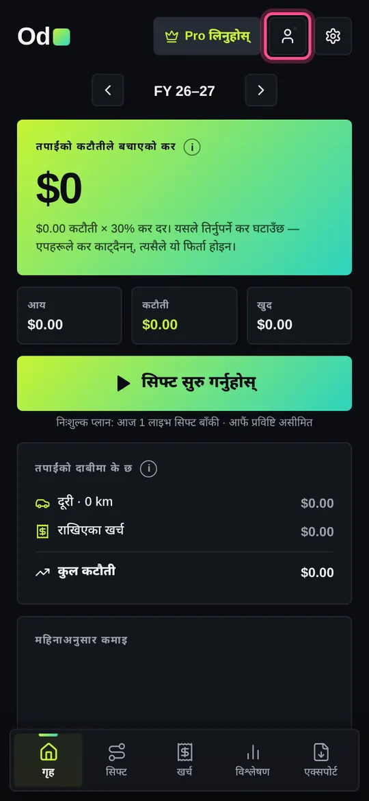
१. व्यक्ति आइकन थिच्नुहोस्
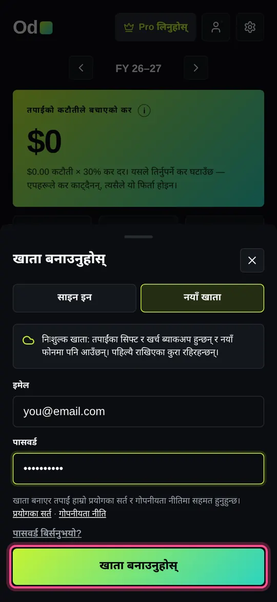
२. नयाँ खाता → खाता बनाउनुहोस्
💡 नयाँ फोन? लिंक खोल्नुहोस्, व्यक्ति आइकन थिच्नुहोस्, साइन इन छान्नुहोस् र उही इमेल र पासवर्ड प्रयोग गर्नुहोस्। तपाईंका रेकर्ड फिर्ता आउँछन्। व्यक्ति आइकनमा हरियो थोप्लो भए ब्याकअप भएको छ।
4
Odo लाई आफ्नो बारेमा बताउनुहोस् (१ मिनेट)
सेटिङ खोल्न माथि दायाँ गियर आइकन थिच्नुहोस्।
तपाईंका सवारी: कार, मोटरसाइकल वा साइकल छान्नुहोस्।
क्षेत्र:अस्ट्रेलिया मै छोड्नुहोस्।
यो वर्षको अनुमानित कुल आय: अर्को कुनै काम सहित यो वर्ष कमाउने सबैको मोटामोटी अनुमान। Odo ले यसबाट तपाईंको कर दर निकाल्छ।
तल सेटिङ सेभ गर्नुहोस् थिच्नुहोस्।
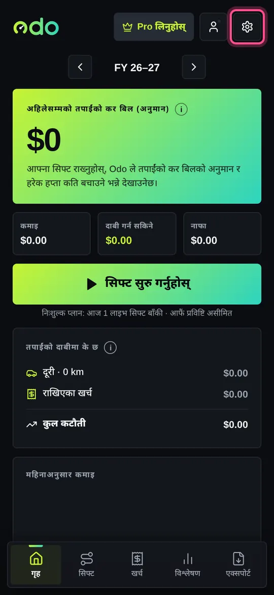
१. गियर आइकन थिच्नुहोस्
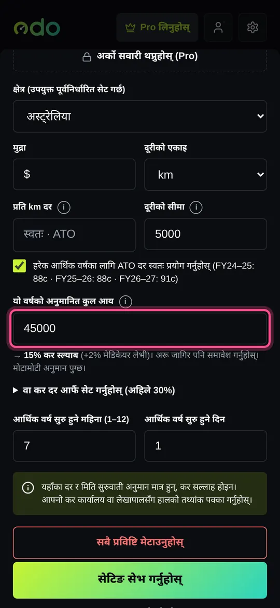
२. अनुमानित आय लेख्नुहोस्
💡 साइकल वा मोटरसाइकल चलाउनुहुन्छ? Odo राइडर मोड मा जान्छ। km दर कारका लागि मात्र हो, त्यसैले तपाईंको दाबी खर्चबाट आउँछ: फोन, मर्मत, ब्याट्री, झोला र सामान।
5
हरेक सिफ्ट राख्नुहोस्
किलोमिटर नै प्रायः तपाईंको सबैभन्दा ठूलो कर दाबी हो। हरेक सिफ्टमा दुई ट्याप मात्र।
काम सुरु गर्दा:सिफ्ट सुरु गर्नुहोस् थिच्नुहोस्, एप छान्नुहोस् (Uber, DoorDash…), ओडोमिटर नम्बर लेख्नुहोस्, काम सुरु थिच्नुहोस्। Odo बन्द गर्न सक्नुहुन्छ; टाइमर चलिरहन्छ।
काम सकेपछि:सिफ्ट अन्त्य गर्नुहोस् थिच्नुहोस्, नयाँ ओडोमिटर नम्बर र कमाइ लेख्नुहोस्, अनि सिफ्ट सेभ गर्नुहोस् थिच्नुहोस्।
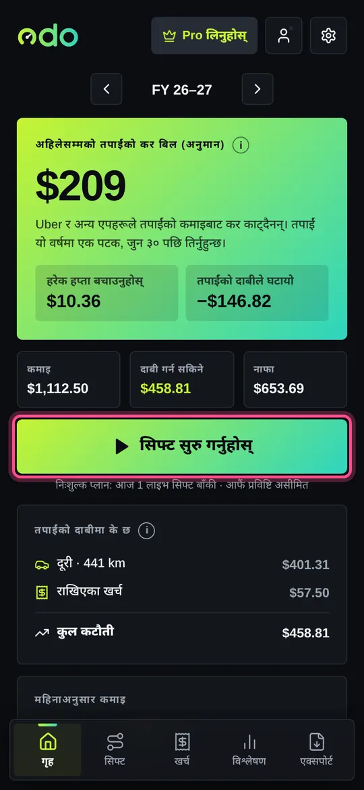
१. सिफ्ट सुरु गर्नुहोस् थिच्नुहोस्
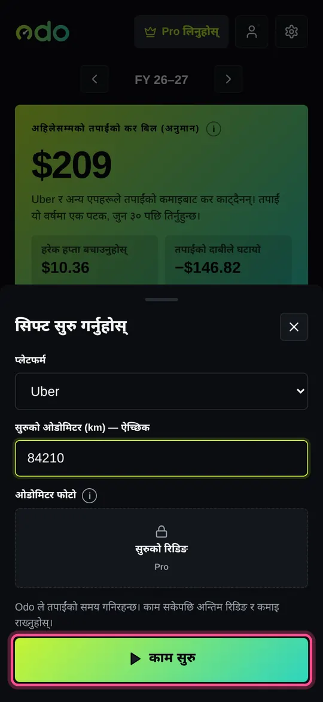
२. ओडोमिटर → काम सुरु
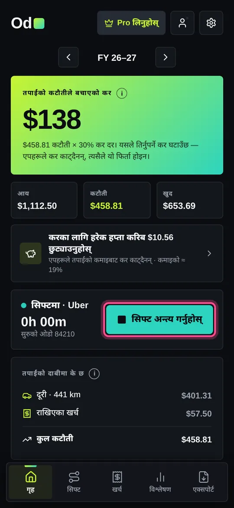
३. काम सकेपछि: सिफ्ट अन्त्य
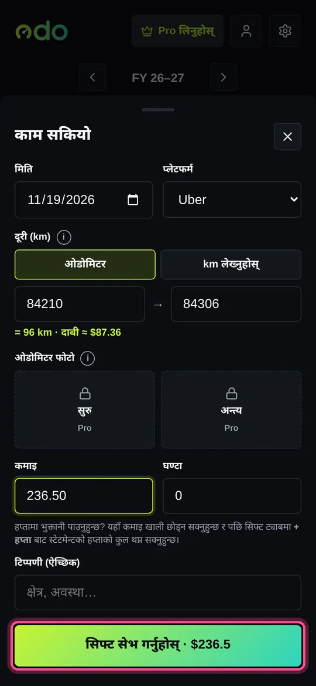
४. अन्तिम ओडोमिटर + कमाइ → सेभ
PROओडोमिटरको फोटो खिच्नुहोस्
Odo Pro मा, सिफ्ट सुरु गर्दा सुरुको रिडिङ थिचेर ओडोमिटरको फोटो खिच्नुहोस्, र सक्दा अन्त्य फोटो थप्नुहोस्। हरेक फोटो मिति र समयसहित सिफ्टमै सेभ हुन्छ र तपाईंको खातामा ब्याकअप हुन्छ।
यो किन महत्त्वपूर्ण छ: ATO ले तपाईंले कामको किलोमिटर कसरी निकाल्नुभयो भनेर देखाउन भन्न सक्छ, र कर बुझाएपछि रेकर्ड ५ वर्ष राख्नुपर्छ। हरेक सिफ्टको सुरु र अन्त्यको फोटो बलियो प्रमाण हो जसमाथि प्रश्न उठाउन गाह्रो हुन्छ। फोन फेर्दा पनि कुनै रिडिङ हराउँदैन वा गलत लेखिँदैन। कर बुझाउने बेला एक्सपोर्ट → फोटो डाउनलोड ले सबै फोटो एउटै ZIP मा तपाईंको कर एजेन्टलाई दिन्छ।
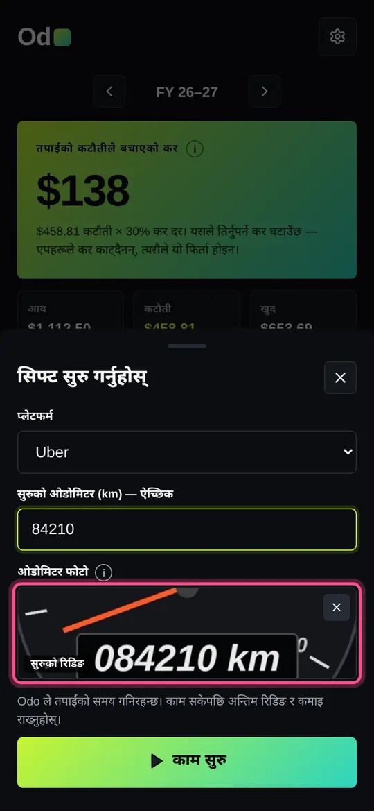
ओडोमिटर फोटो सिफ्टसँगै सेभ
💡 सुरु गर्न बिर्सनुभयो? सिफ्ट ट्याब → + सिफ्ट बाट पछि भर्नुहोस्। हप्तामा भुक्तानी पाउनुहुन्छ? सिफ्ट ट्याब → + हप्ता र साप्ताहिक विवरणको कुल लेख्नुहोस्। कामको km मात्र गनिन्छ: घरबाट पहिलो काम सम्मको बाटो नगनिन सक्छ।
6
कामका खर्च थप्नुहोस्
खर्च ट्याबमा जानुहोस् र खर्च थप्नुहोस् थिच्नुहोस्।
एउटा श्रेणी छान्नुहोस् (जस्तै फोन र इन्टरनेट) र रकम लेख्नुहोस्।
कामका लागि प्रयोग लाई कामका लागि जति हो त्यति सार्नुहोस्। फोन ७०% डेलिभरीमा प्रयोग हुन्छ? ७०% राख्नुहोस्।
सेभ गर्नुहोस् थिच्नुहोस्।
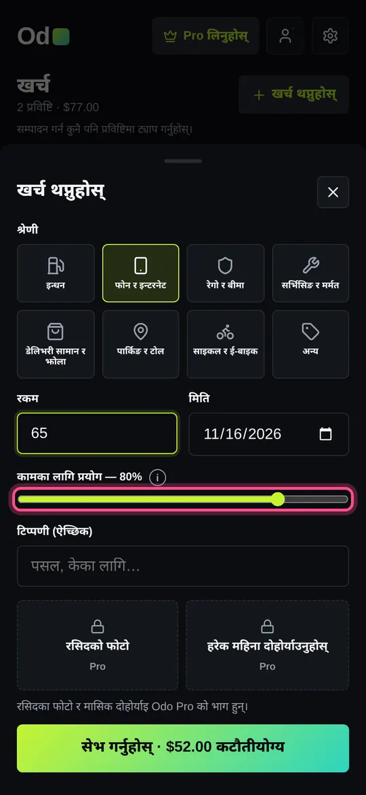
कामका लागि कति, सेट गर्नुहोस्
⚠️ कार चलाउनुहुन्छ? इन्धन, रेगो, बीमा वा सर्भिसिङ नथप्नुहोस्। ATO को km दर (२०२६–२७ मा प्रति km ९१ सेन्ट) मा यी पहिल्यै समावेश छन्। पार्किङ र टोल थप्न सकिन्छ।
7
आफ्ना अंक हेर्नुहोस्
अहिलेसम्मको तपाईंको कर बिल
तपाईंले कति कर तिर्नुपर्छ भन्ने मोटामोटी अनुमान। एपहरूले कमाइबाट कर काट्दैनन्, त्यसैले तपाईं यो वर्षमा एक पटक, जुन ३० पछि तिर्नुहुन्छ। तपाईंले राखेको हरेक km र कामको खर्चले यसलाई घटाउँछ।
हरेक हप्ता बचाउनुहोस्
हरेक हप्ता यति छुट्याउनुहोस्, ताकि जुलाईमा करको बिलले झस्काउँदैन।
कमाइ / कामको खर्च / नाफा
तपाईंले कति कमाउनुभयो, तपाईंको कामको खर्च (km र खर्चहरू), र बाँकी: तपाईंको नाफा। कामको खर्च फिर्ता पाउने पैसा होइन: यसले कर लाग्ने रकम घटाउँछ।
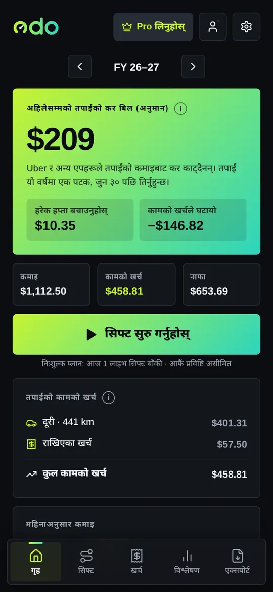
पूरा वर्ष एकै नजरमा
💡 छोटो व्याख्याका लागि कुनै पनि ⓘ आइकन थिच्नुहोस्।
8
कर बुझाउने बेला: एक्सपोर्ट
जुन ३० पछि एक्सपोर्ट ट्याब खोल्नुहोस्।
आफ्ना सिफ्ट, खर्च र सारांश डाउनलोड गर्नुहोस्। यी Excel वा Google Sheets मा खुल्छन्।
यी आफ्नो कर एजेन्टलाई पठाउनुहोस्, वा myTax मा यिनका कुल प्रयोग गर्नुहोस्।
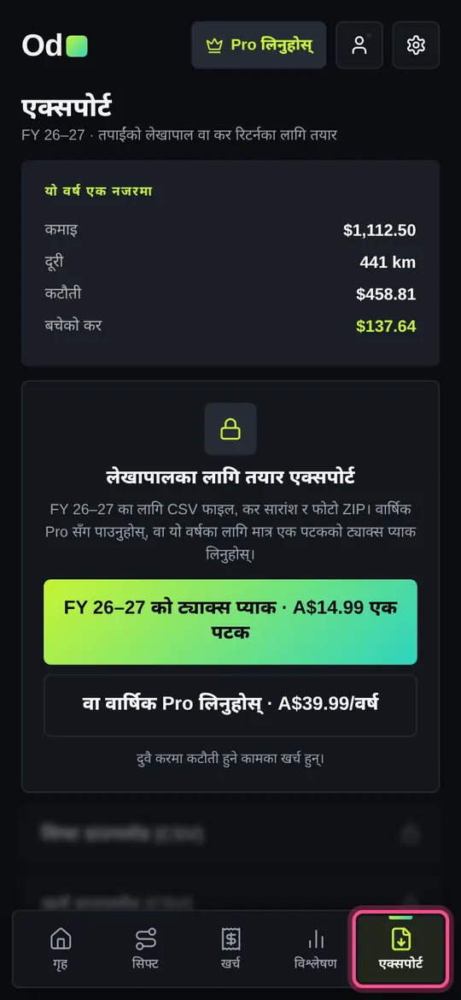
एकाउन्टेन्टलाई चाहिने सबै
💡 एक्सपोर्ट वार्षिक Pro सँग आउँछ, वा एक वर्षका लागि मात्र एक पटकको ट्याक्स प्याक (A$14.99) किन्नुहोस्। दुवै कामका खर्च हुन्, दाबी गर्न सकिन्छ।
Odo को बारेमा
नमस्ते, म Rickie हुँ 👋 म अस्ट्रेलियामा पेरोलमा काम गर्छु, त्यसैले तलब र कर मेरो दैनिक कामकै भाग हुन्।
मेरा धेरै साथीहरू Uber र अन्य एपमा गाडी चलाउँछन्। कर बुझाउने बेला, धेरैसँग आफ्नो खर्चको कुनै रेकर्ड हुँदैनथ्यो, न त कर घटाउन दाबी गर्न सकिने किलोमिटरको। यो दुःखको कुरा हो, किनभने यो उनीहरूको मेहनतको कमाइ हो, र हरेक डलरको महत्त्व छ।
त्यसैले मैले Odo बनाएँ: हरेक सिफ्ट, हरेक किलोमिटर र कामको हरेक खर्च राख्ने सजिलो तरिका, ताकि कर बुझाउने बेला सबै तयार होस्।
स्वतन्त्र। Odo को Uber, DoorDash, Menulog वा ATO सँग कुनै सम्बन्ध छैन।
मद्दत चाहियो?
पूरा गाइड: सेटिङ → Odo कसरी प्रयोग गर्ने, वा अनलाइन गाइड।
प्रश्न छ? सेटिङ → मद्दत र सहयोग। साइन इन गर्नुभएको छ भने हामी एपमै जवाफ दिन्छौं।
Odo रेकर्ड राख्ने उपकरण हो, कर सल्लाह होइन। हालका नियम ato.gov.au मा वा दर्ता भएको कर एजेन्टसँग पक्का गर्नुहोस्। · अपडेट: २०२६ नोभेम्बर १७